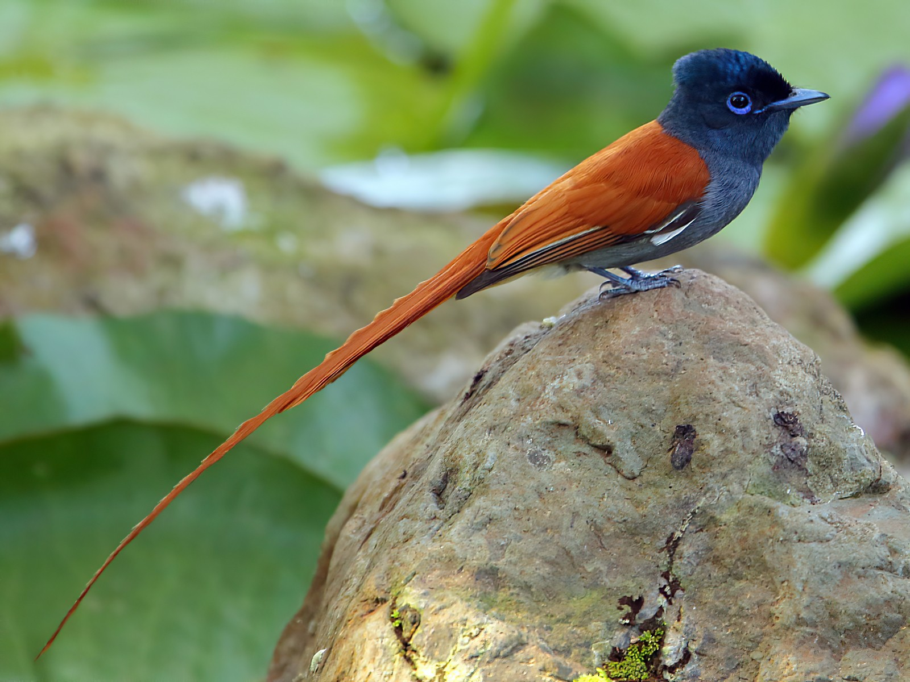
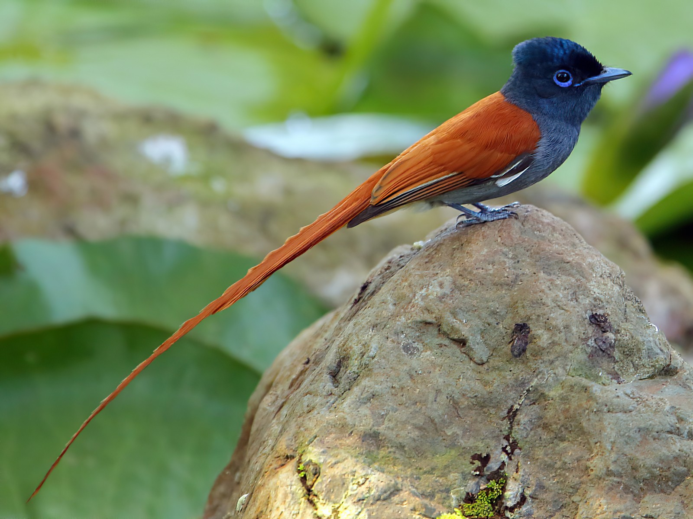
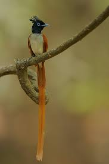
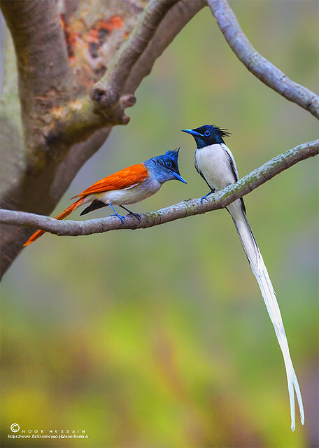

Paradise Flycatcher
The paradise flycatchers (Terpsiphone) are a genus of birds in the family Monarchidae. The genus ranges across Africa and Asia, as well as a number of islands. A few species are migratory, but the majority are resident. The most telling characteristic of the genus is the long tail streamers of the males of many species. In addition to the long tails the males and females are sexually dimorphic and have rufous, black and white plumage.
Paradise Flycatcher are found in Kumarakom Bird Sanctuary. Other birds such as Pheasant Tailed Jacanas, Parrots, Herons, Kingfishers etc are also seen in Kumarakom Bird Sanctuary.
 


